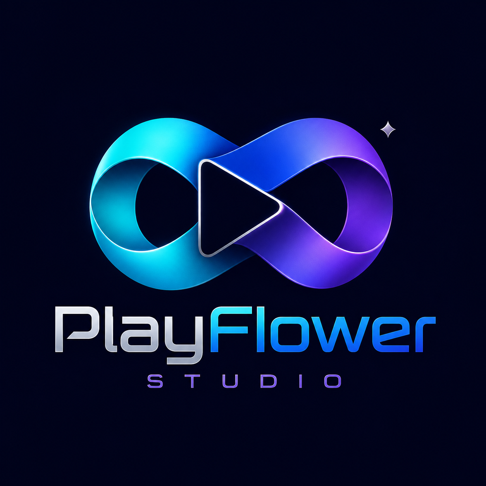
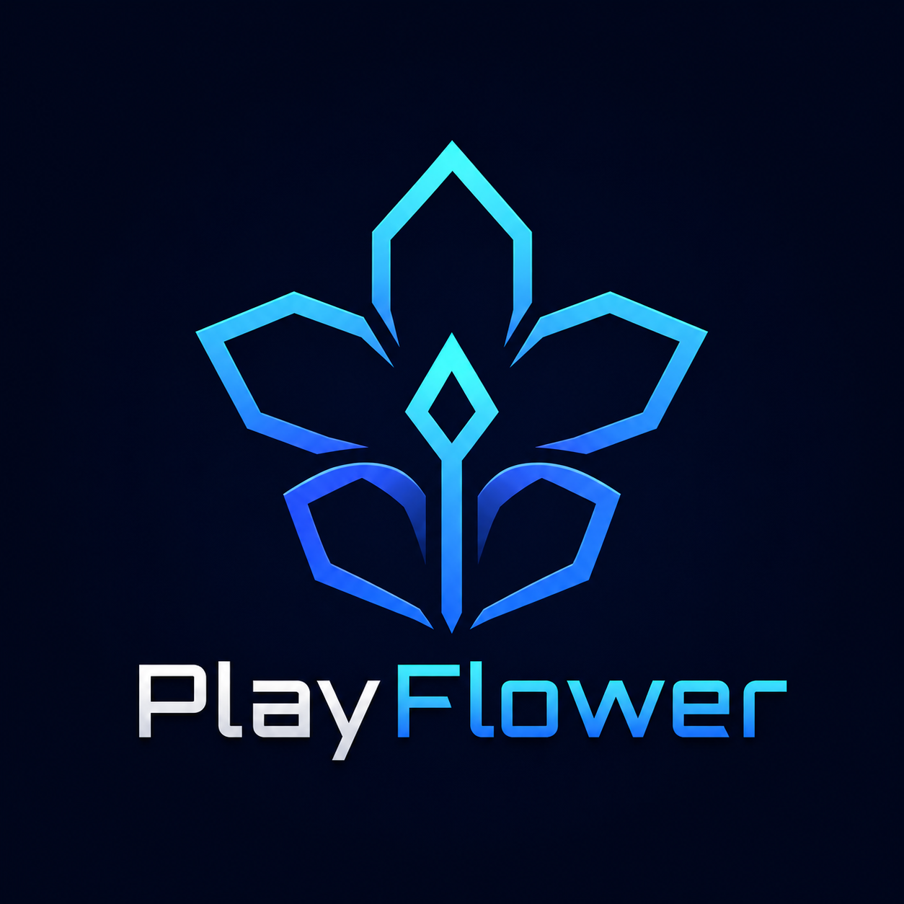
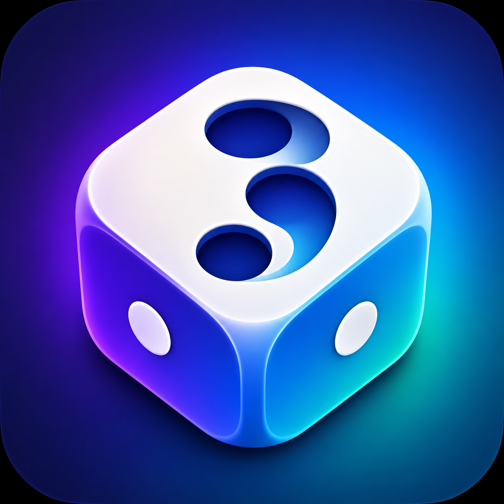

Pomysł ponad szablon
Każdy świat potrzebuje własnej osobowości.

PlayFlowerCREATIVE STUDIOŁączymy gry, społeczności i technologię w doświadczenia, do których chce się wracać.
WELCOME TO
NASZE ŚWIATY
Każdy projekt ma własny charakter,
ale wszystkie łączy jakość PlayFlower.

MINECRAFT NETWORK
Rozwijany serwer Minecraft pełen własnych trybów, wydarzeń i systemów, które budują prawdziwą społeczność.
Wejdź na stronę projektu ↗
GRA PLANSZOWA
Klasyczna rywalizacja w nowoczesnym wydaniu na Windows i Androida, a później również w przeglądarce.
Poznaj 3Games Ludo →PLAYFLOWER STUDIO
Nie kopiujemy gotowych schematów. Szukamy własnego stylu, budujemy od podstaw i rozwijamy projekty razem z ich społecznością.
Porozmawiajmy →Każdy świat potrzebuje własnej osobowości.
Tworzymy dla ludzi, nie tylko dla statystyk.
Każda premiera to początek kolejnego etapu.
MASZ POMYSŁ?